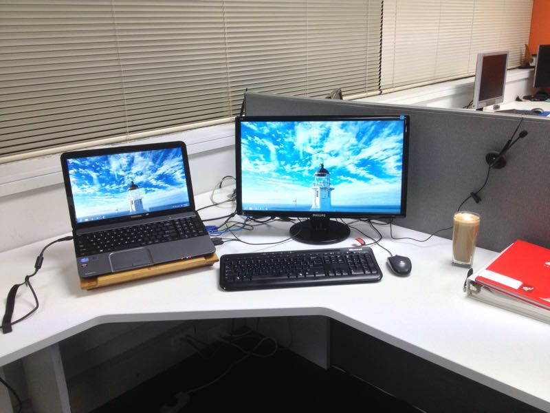
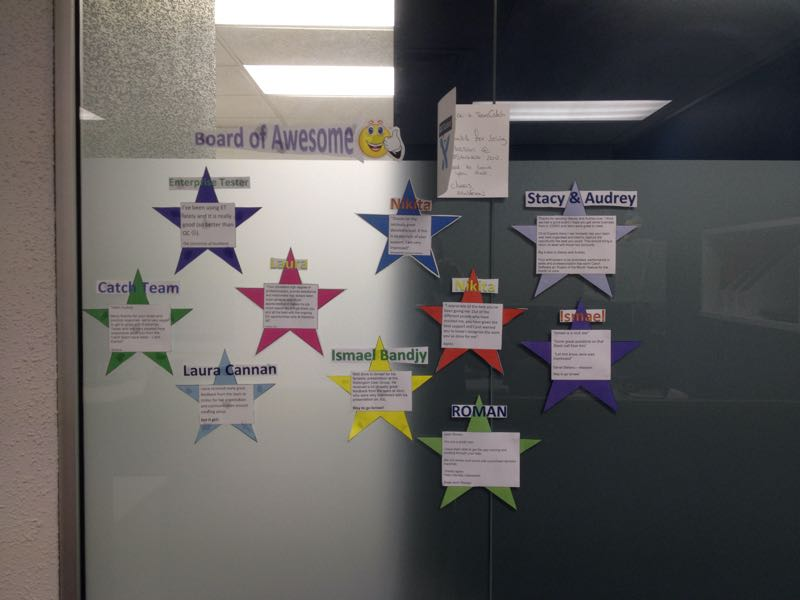

Duties
-
responsible for triaging, prioritizing and answering support tickets that came from customers of Enterprise Tester, Enterprise Architect, Screen Architect, EA2QC;
-
every customer's support request had to be tested and, if necessary, escalated for the Development Team to fix or implement;
-
helping testing team with manual testing, which allowed quicker bug fixing, shorter development cycle.
Achievements
-
amount of outstanding support tickets decreased by 50%;
-
helped the QA team with testing → we were able to push more bug fixes to the next Enterprise Tester release;
-
as part of the "SEN project", successfully created SENs for every single user of Enterprise Tester and notified them.

My work place, April 2013

Catch Support wall of fame, July 2013
{% endblock content %}